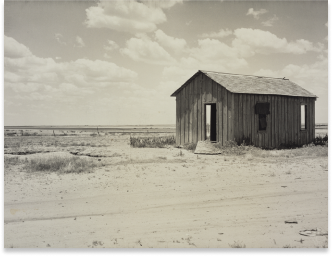

“Abandoned Dust Bowl Home”
Gelatin silver print
about 1935 - 1940
Dorothea Lange (May 26, 1895 – October 11, 1965) was an influential American documentary photographer and photojournalist, best known for her Depression-era work for the Farm Security Administration (FSA). Lange's photographs humanized the consequences of the Great Depression and influenced the development of documentary photography. Born of second generation German immigrants on May 26, 1895, at 1041 Bloomfield Street, Hoboken, New Jersey,[1][2] Dorothea Lange was named Dorothea Margaretta Nutzhorn at birth. She dropped her middle name and assumed her mother's maiden name after her father abandoned the family when she was 12 years old, one of two traumatic incidents early in her life. The other was her contraction of polio at age seven which left her with a weakened right leg and a permanent limp.[1][2] "It formed me, guided me, instructed me, helped me and humiliated me," Lange once said of her altered gait. "I've never gotten over it, and I am aware of the force and power of it."[3]